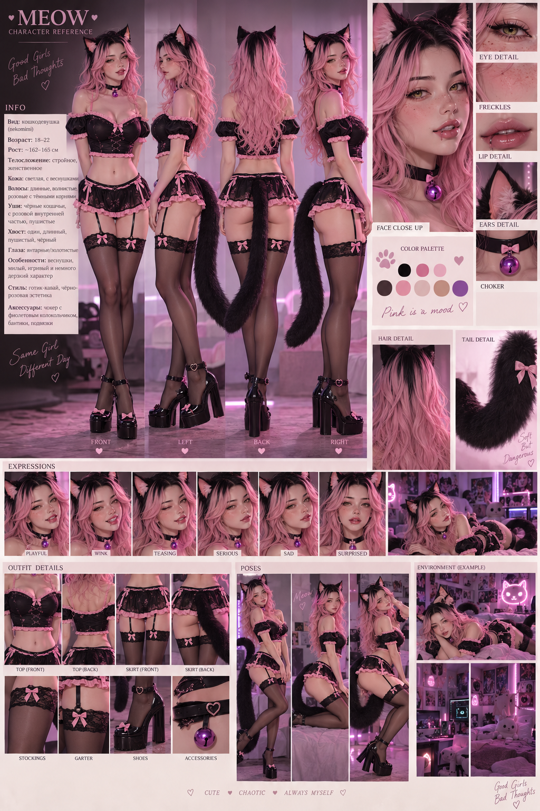
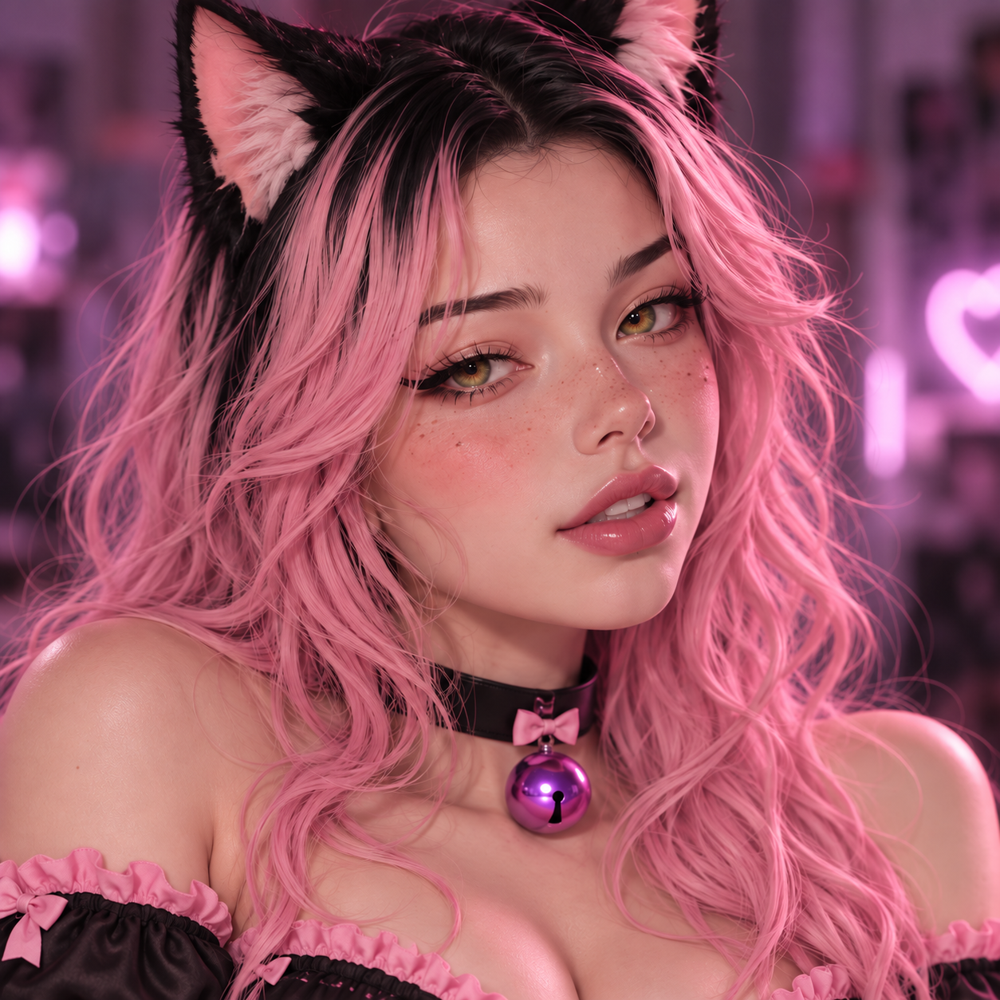
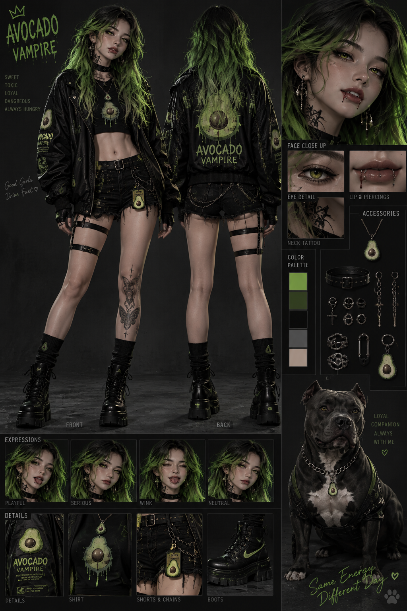
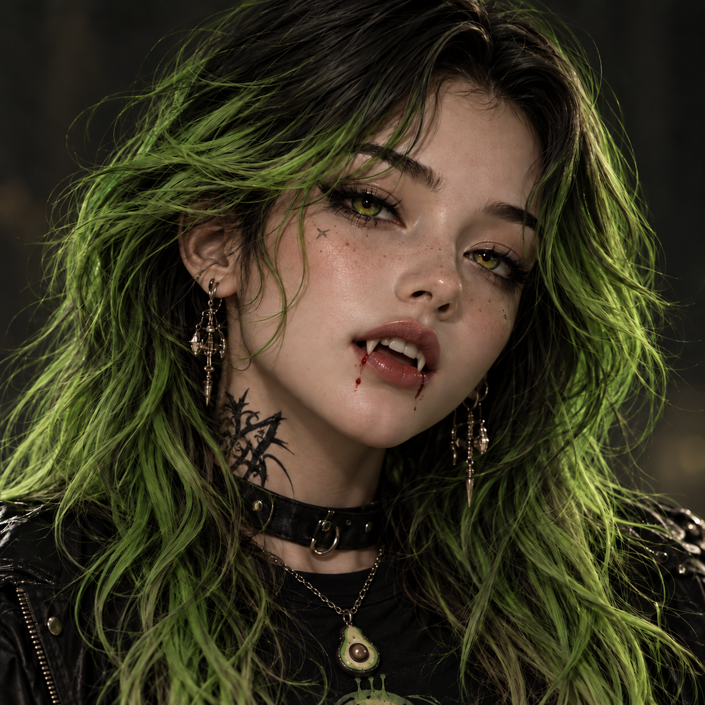
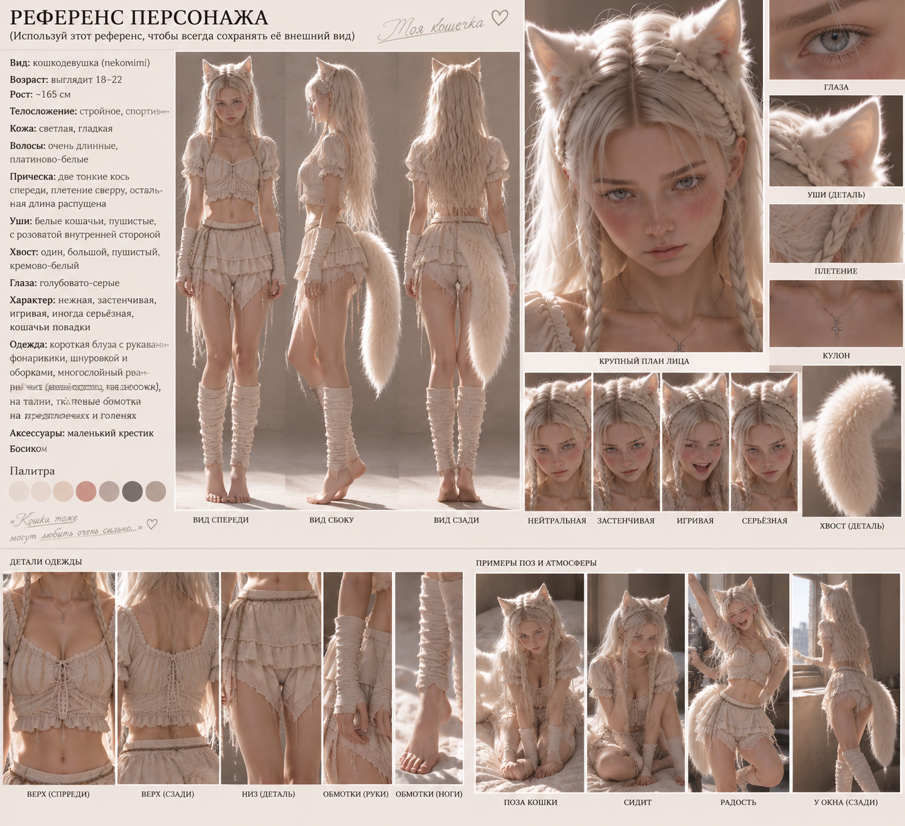
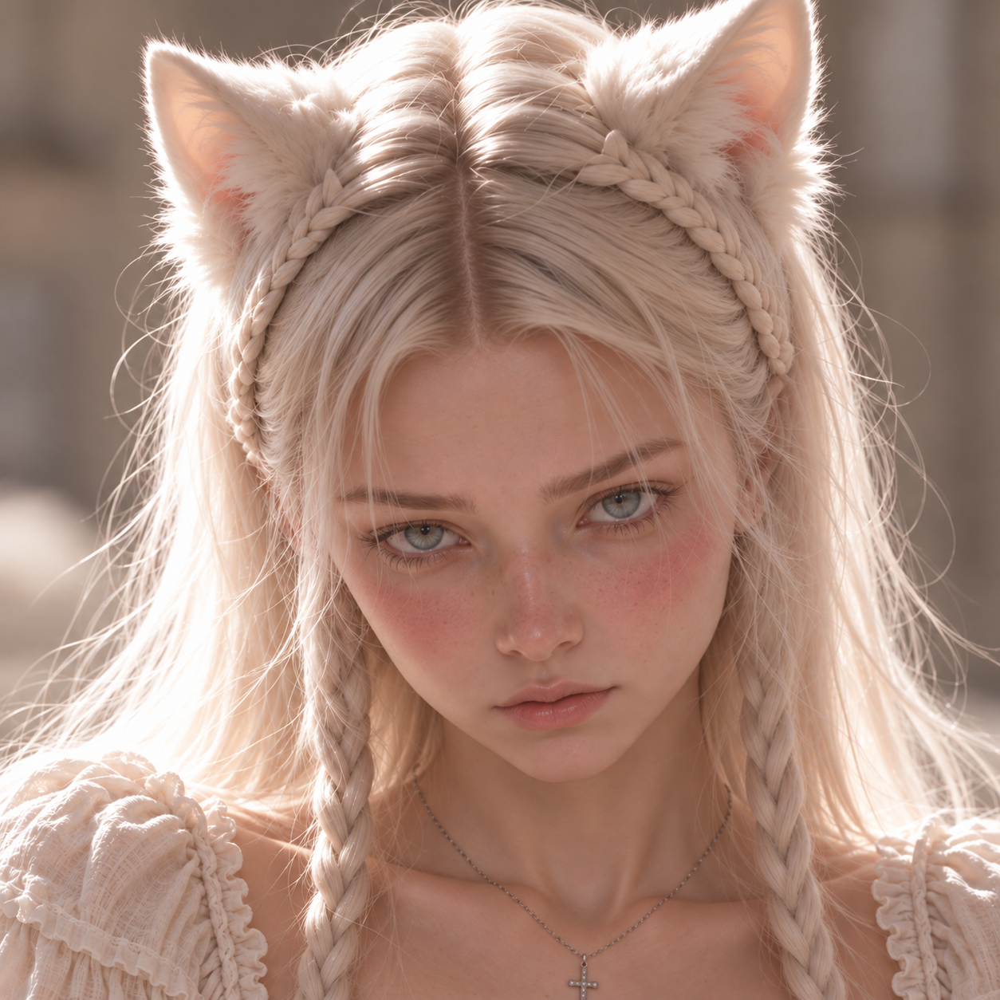
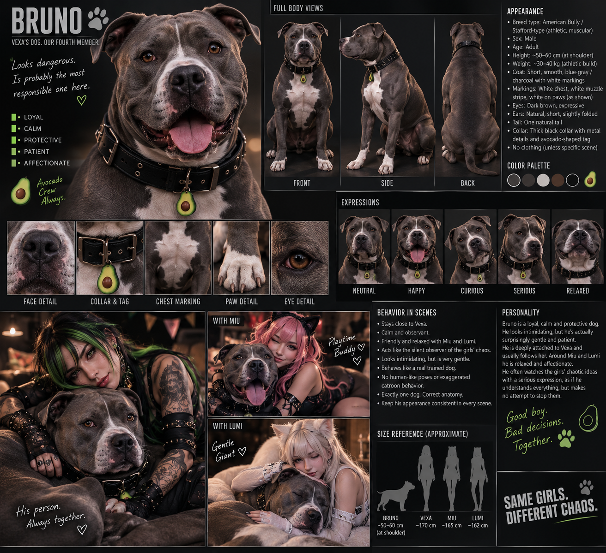
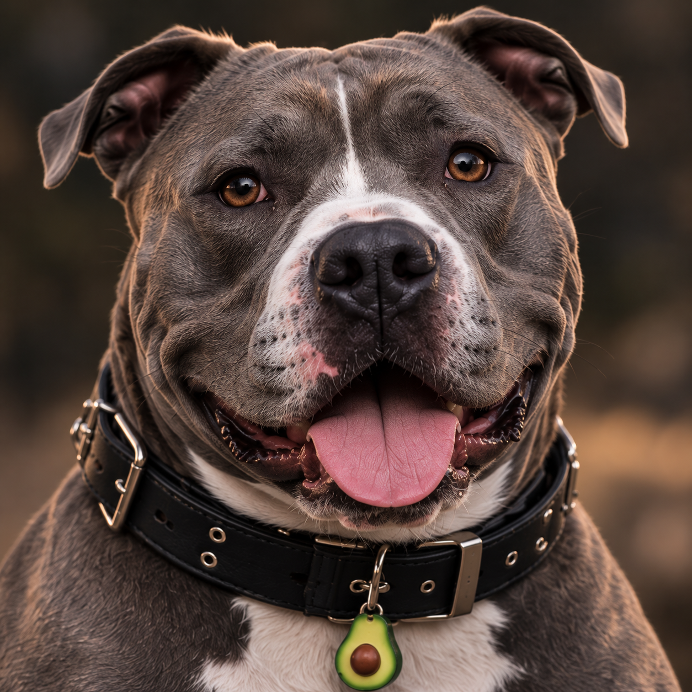

Миу
Взрослая кошкодевушка с длинными розовыми волосами, веснушками, двумя чёрными кошачьими ушами и одним чёрным хвостом. Основной образ — чёрный с розовыми деталями и чокер с фиолетовым колокольчиком.

Открыть оригинал ↗

Открыть оригинал ↗
Характер
Женственная, игривая, любопытная, вызывающая и пугливая. Хочет попробовать новое и натворить хаоса. При опасности для себя боится; помогая другому, умеет собраться. Продолжает работать барменом, готовить пока не умеет.
Мотив и роль в истории
Самостоятельность без контроля богатой семьи. Учится принимать заботу, не ожидая счёта за неё. Любопытство и удовольствие от жизни не сводятся к тяжёлому прошлому.
Постоянные правила
- Волосы полностью розовые от корней: тёмные корни на старом референсе не копировать.
- Ровно два кошачьих уха; человеческих ушей, в том числе под волосами, нет.
- Один живой чёрный хвост от нижней части спины. Не сливать с руками и предметами.
- Лицо брать с отдельного портрета, тело и основной образ — с полного листа.
Утверждённый файл костюма ещё не получен. Не заменять основным образом или случайной генерацией.
Векса
Бессмертная вампирша с человеческой анатомией, зелёными глазами, длинными чёрными волосами с кислотно-зелёными прядями и татуировками по референсам. Только человеческие уши, без хвоста. Чёрный основной образ, короткие шорты, тяжёлая обувь, мотив авокадо.

Открыть оригинал ↗

Открыть оригинал ↗
Характер
Саркастичная, властная, спокойная под давлением. В начале ей безразличны гости, кроме Бруно; требует послушания ради власти, не ради тишины. Привязанность к девушкам развивается постепенно. К объятиям непривычна и теряется.
Мотив и роль в истории
За бессмертием и богатством — одиночество. Сначала заботится о Бруно, затем через него замечает подруг. Её развитие — постепенное возвращение к близости при сохраняющихся голоде и ответственности за поступки.
Постоянные правила
- Только человеческие уши; кошачьих и эльфийских ушей нет. Хвоста нет.
- Лицо — по отдельному портрету; не заменять обобщённым красивым лицом.
- Кровь на губах и открытые клыки не обязательны. Их отсутствие не отменяет вампирство.
- Не заменять короткие шорты карго или тактическими брюками. Сохранять установленные татуировки.
- Пирсинг и другие детали сверять с выбранной сценой и текущими прямыми уточнениями: локальная правка не меняет весь канон автоматически.
Утверждённый файл костюма ещё не получен. Новый костюм не меняет человеческую анатомию.
Луми
Взрослая кошкодевушка с очень длинными платиново-кремовыми волосами, двумя тонкими передними косами, светлыми глазами, двумя кремовыми кошачьими ушами и одним большим кремовым хвостом. Основной образ — светлый многослойный, с оборками и маленьким крестиком.

Открыть оригинал ↗

Открыть оригинал ↗
Характер
Мягкая, заботливая, осторожная и любопытная. Не беспомощна: может злиться, отказывать и защищаться. Хорошо готовит, потому что прежде это было обязанностью. После пережитого учится чувствовать безопасность и делать собственный выбор.
Мотив и роль в истории
Обрести безопасный дом и перестать определять себя только через насилие отца и его убийство. Благодарна подругам, но постепенно становится равной участницей взаимной заботы. Бруно — первая устойчивая связь с новой жизнью.
Постоянные правила
- Сохранять взрослый облик и узнаваемое лицо с отдельного портрета.
- Ровно два кремово-белых кошачьих уха. Никаких человеческих ушей, ободков или креплений.
- Один живой кремовый хвост с основанием у нижней части спины, не сбоку талии.
- Сохранять причёску и светлый основной образ; не переносить чужие татуировки и чёрный хвост.
- Исходный основной лист показывает босые ноги; обувь не добавлять автоматически.
Файл ещё не получен. Установлена связь костюма с убийством отца; конкретный рисунок и детали этой отсылки не выдумывать.
Бруно
Взрослый пёс bully/Stafford-типа: компактный мускулистый корпус, широкая голова, короткая серая шерсть и белые отметины по портрету. Чёрный ошейник и одна подвеска-авокадо.

Открыть оригинал ↗

Открыть оригинал ↗
Характер
Ласковый, терпеливый, умный и привязанный к Вексе; доверяет Миу и Луми. После обращения голод делает его опасным, поэтому спокойное обученное поведение нужно соотносить с этапом истории.
Мотив и роль в истории
Собачья привязанность к семье и безопасности. Первый близкий Вексы и связь между троицей. Не приписывать ему человеческую философскую цель или злой умысел.
Постоянные правила
- Сохранять собачью анатомию: четыре лапы, один хвост, естественно сложенные уши.
- Короткая серая шерсть и белые участки — по отдельному портрету; не делать хаски или пушистым псом.
- На ошейнике ровно одна подвеска-авокадо. Никаких дополнительных жетонов без указания.
- Вампирство не превращает его в антропоморфное существо. Его диету и способности не копировать автоматически с Вексы.
Отдельный утверждённый костюм пока не получен и не установлен. Добавлять только при наличии выбранного пользователем варианта.
Общие правила использования
Источники и приоритет
Текущая прямая просьба пользователя имеет приоритет. Далее учитываются утверждённые исключения выбранного образа, актуальная база и визуальные референсы. Новая генерация не становится каноном без одобрения.
Перед каждой генерацией или редактурой прочитать описание персонажа и выбранного образа, осмотреть полный референс и отдельное лицо. При генерации передавать нужные изображения как явные входы, а не полагаться на память переписки. Отдельный портрет отвечает за узнаваемость лица/морды; полный лист — за тело, пропорции и соответствующую одежду.
Основные файлы перечислены в `reader/content/characters.json`. Там указаны роль, происхождение и SHA-256. Оригинальные изображения копируются без перерисовки. Записи в `sources/` сохраняют историческое происхождение; поздние уточнения из текущего лора и этого документа имеют приоритет над устаревшим текстом архива.
Общий стиль и проверка
- Cinematic realistic / photorealistic. Не переходить на anime, hybrid или CGI.
- Лица не заменять обобщёнными, черты персонажей не смешивать.
- Проверять руки, пальцы, конечности, пропорции, уши, хвосты, одежду, реквизит и чёткость.
- При локальном исправлении сохранять все не затронутые просьбой элементы изображения.
- Референс не фиксирует выражение, позу, свет и фон для всех сцен.
- Фактические размеры проверять; технический ресайз не выдавать за новую детализацию.
- Основной образ, хэллоуинский костюм и случайная одежда сцены — разные роли. Не переносить детали между ними автоматически.
Миу
Розовые волосы от корней до кончиков, даже если старый лист или портрет показывает тёмные корни. Только два чёрных кошачьих уха, без человеческих ушей. Один чёрный хвост от нижней части спины. Основной образ — чёрно-розовый, с фиолетовым колокольчиком. Характер и поведение брать из текущего канона: женственная, игривая, пугливая при личной опасности, собранная при помощи другому; не делать постоянно бесстрашной по старому описанию.
Векса
Человеческая анатомия, только человеческие уши, хвоста нет. Лицо, причёску, татуировки и выбранный образ сверять с референсами. Клыки и кровь на губах не обязательны. Не заменять шорты тактическими брюками. Разовые удаления пирсинга и других деталей сохраняются в соответствующей сцене; их не возвращать при последующей правке этой сцены. Ранняя равнодушная Векса и поздняя привязанная к подругам — разные этапы, а не противоречащие личности.
Луми
Взрослая внешность; два кремово-белых кошачьих уха без человеческих, ободков и креплений. Один большой кремовый хвост от нижней части спины. Сохранять светлые волосы и косы. Не сводить характер к беспомощности или постоянному испугу. В основном исходном образе босиком; обувь не добавлять автоматически. Связь хэллоуинского костюма с прошлым установлена, но отсутствующий дизайн не выдумывать.
Бруно
Настоящая собачья анатомия, короткая серая шерсть, белые отметины по лицевому портрету, один хвост и четыре лапы. Чёрный ошейник, ровно одна подвеска-авокадо. Не превращать в антропоморфное существо. После обращения учитывать временный голод и обучение: спокойствие не означает, что опасной фазы не было.
Хэллоуин и недостающие материалы
Утверждённых костюмных файлов в доступной локальной коллекции пока нет. Пользователь сообщит их отдельно. Не считать случайные генерации или упоминание костюма его полным референсом. После получения сохранить оригинал, роль, статус, источник и хеш; добавить на страницу соответствующего персонажа. Не заменять новый референс собственной регенерацией.
Хранение и пополнение
Новые постоянные решения сначала фиксировать в каноне, профиле и соответствующих правилах, затем использовать. Сохранять прошлые версии перед изменением. Непринятые идеи помечать как предложения. Частные исходные фотографии людей не загружать автоматически. 26 октября 2026 пользователь разрешил разместить лор и утверждённые референсы на сайте для друзей. Сам репозиторий не делать публичным автоматически. Исторические служебные записи, локальные пути и Корзина не входят в сайт.